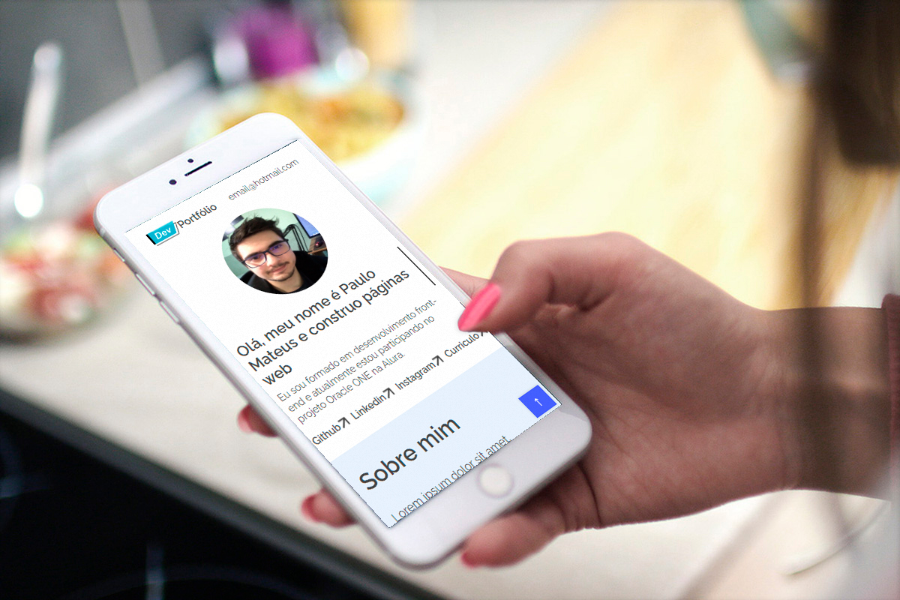

Site de portfolio
Desafio de aprendizado
Esse foi um desafio de um dos cursos que eu fiz onde nós alunos tivemos que fazer esse site de portfólio baseado no design que nos foi entregue via figma
Este projeto de Web Design consiste na programação de um visual de design criado no figma, deixando-o um site de verdade, responsivo e funcional.
O objetivo desse desafio era criar esse site até uma data específica, seguindo os pedidos do desafio, o quesito visual do site não precisava ser identico ao design que nos entregaram via figma, o importante era mostrar o conhecimento em programação pedido pelo desafio.
Com esse dasafio foi possível colocar em prática meus aprendizados e foi essêncial para eu aprender e fixar o entendimento, além de colocar em prática o HTML e sua semântica foi uma ótima maneira de também fixar conhecimentos em CSS e no meio disso entender várias dúvidas.
Ver demonstração ← Voltar ao portfolio